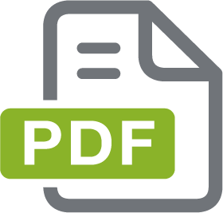

Se requiere tener instalada previamente una aplicacion para la correcta visualizacion de archivos en formato
.pdf
®
 Se requiere tener instalada previamente una aplicacion para la correcta visualizacion de archivos en formato .pdf®
Se requiere tener instalada previamente una aplicacion para la correcta visualizacion de archivos en formato .pdf®